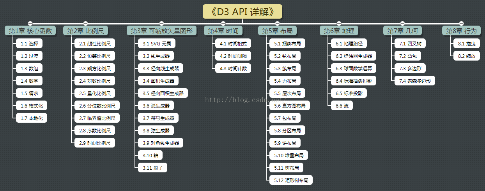

形状：
rect 矩形 x和y的指定左上角的坐标，width和height指定矩形的尺寸
circle 原型 cx和cy指定圆心的坐标，ŗ表示半径大小
ellipse 椭圆 cx和cy指定圆心坐标，rx和ry分别指定横半轴纵半轴长度
line 线 用x1和Y1到指定线的一端的坐标，x2和y2指定的另一端的坐标。stroke指定描边让线是可见的。
text 文本 x和y指定文本的位置 可以设置文本样式
svg的样式 fill填充的颜色 stroke描边的颜色 stroke-width描边的宽度 opacity透明度 font-family字体 font-size字号 text-anchor对齐方式